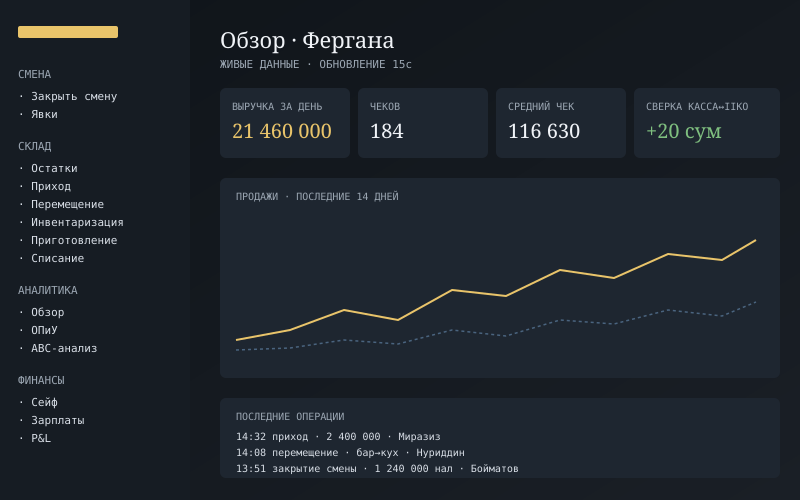

Lokmaco — операционная система сети
Единственный разработчик · 2024 — сейчас

Платформа, которая заменила разрозненные сайты и ручные операции в сети кофеен The Lokmaco. Все складские и кассовые действия проводятся прямо в iiko как настоящие документы. Работает в двух филиалах, через неё проходит около 900 операций в месяц.
Что реализовано
- Склад: приход накладных, перемещения с подтверждением, инвентаризация, приготовление, списание и акты услуг.
- Касса: закрытие смены кассиром с живой сверкой с iiko, история смен и редактор отчёта, сейф с журналом пересчётов.
- Финансы: зарплаты, ОПиУ, месячная сверка касса↔iiko, налоговый отчёт для 1С (реализация, расход сырья по техкартам, списания).
- Аналитика: ABC-анализ блюд, ликвидность, продажи по группам, закупки, официанты. Данные обновляются в реальном времени.
- Опись основных средств: партии вида EQ-00745-01…, QR-наклейки, обход телефоном с камеры, акт инвентаризации INV-3 с экспортом.
- Банкеты и брони столов, явки сотрудников, мультифилиальность и 9 ролей на 21 раздел.
- Две отдельные оболочки: десктопное дерево разделов и мобильная с нижней панелью и шторками.
Как это устроено
- Права. Единая матрица доступа в одном файле, снятая с прежней версии и сверенная программно (9 ролей × 21 раздел). Роль берётся из JWT, а список филиалов читается из базы с минутным кэшем, поэтому новый филиал виден без перелогина.
- Сверка кассы. Наличные = фискальные + инкассация + расходы кассира; разница = общая сумма минус продажи iiko. Первая «выдуманная» модель расходилась на миллионы, после переноса формулы как в старой версии расхождение за день стало 20 сум при обороте около 20 млн.
- Разбор накладных. Сопоставление позиций с номенклатурой по нормированному счёту 0…1 с порогом 0.4. Лучше пустая строка, которую выберут руками, чем чужой товар. Устойчивый разбор ответа модели: принимает и объект, и массив, и текст вокруг.
- Голос без речи. Перед распознаванием проверяется, есть ли в записи речь: по изменчивости энергии по кадрам (коэффициент вариации выше 0.35). Иначе модель придумывала накладную из тишины.
- iikoWeb. Запросы идут через собственный HTTP/1-клиент на node:https, потому что undici получал от хоста 500.
- Секреты. Реквизиты филиалов шифруются AES-256-GCM; вход по passkey (WebAuthn), попытки ограничены по IP.
- Обход ОС. Ненайденное считает сервер, а не браузер. Буфер обхода в localStorage переживает потерю связи. BarcodeDetector есть только в Chromium, поэтому на iPhone запасной путь через jsQR с 10 кадрами в секунду.